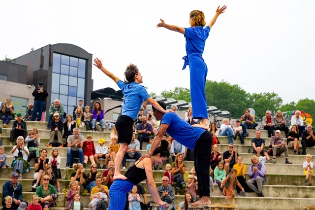

Nieuws ·
Artiesten Oproep voor Zomerse Optredens bij ‘Podium aan de Waal’

Deze zomer keert het geliefde ‘Podium aan de Waal’ terug, een bruisend openluchttheater op de Waalkade, georganiseerd door het Lindenberg Cultuurhuis en De Schoenfabriek. Voor de optredens in mei en juni zijn wij op zoek naar getalenteerde podiumkunstenaars uit de regio Nijmegen. Ben jij een artiest in disciplines zoals circus, dans, urban, theater of fanfare, dan is dit jouw kans! Aanmelden voor deze unieke kans kan tot en met zondag 11 februari 2024.
Het Podium aan de Waal biedt een prachtig amfitheater bij de Lindenberghaven als podium. Dit initiatief streeft naar actieve samenwerking met de stad en haar inwoners, en nodigt iedereen uit om hun talenten te delen. Of je nu een ervaren maker bent, een creatieve geest, kind of volwassene, elk type act dat geschikt is voor een openluchttheater is welkom om zich in te schrijven. Let op: bands vallen buiten de selectiecriteria voor dit podium.
Afgelopen twee jaar heeft Podium aan de Waal diverse en verrassende optredens gepresenteerd, variërend van internationale straattheateracts zoals ‘Autoportante’ uit Italië tot lokale groepen als Drumfanfare Michaël en De Stefaantjes. Een divers scala aan acts heeft hierdoor het podium kunnen betreden.
Hoe Aanmelden?
Ben je geïnteresseerd om op te treden? Stuur dan een e-mail naar waalkade@delindenberg.com met een beschrijving van je act en, indien mogelijk, een video. Aanmelden is mogelijk tot en met zondag 11 februari 2024.
Mis deze geweldige kans niet om deel uit te maken van de levendige zomerprogrammering van Podium aan de Waal, en deel je passie en talent met het publiek van Nijmegen!